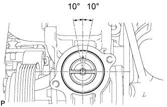

ТЕРМОСТАТ > УСТАНОВКА |
| 1. УСТАНОВИТЕ ТЕРМОСТАТ |
|  |
Установите на термостат новую прокладку.
Установите термостат паровыпускным клапаном вверх.
| 2. УСТАНОВИТЕ ВПУСКНОЙ ПАТРУБОК ОХЛАЖДАЮЩЕЙ ЖИДКОСТИ |
Закрепите новую прокладку и впускной патрубок охлаждающей жидкости с помощью болта и 2 гаек.
| 3. ПОДСОЕДИНИТЕ ШЛАНГ РАДИАТОРА № 2 |
Подсоедините шланг радиатора № 2.
| 4. УСТАНОВИТЕ ЛОПАСТНОЙ НАСОС В СБОРЕ |
Закрепите лопастной насос 2 болтами.
Подсоедините 2 разъема.
Установите нагнетательную трубку с помощью болта.
| 5. УСТАНОВИТЕ ПОЛИКЛИНОВОЙ РЕМЕНЬ ВЕНТИЛЯТОРА И ГЕНЕРАТОРА |
 |
Установите поликлиновой ремень на все шкивы, кроме шкива натяжителя приводного ремня.
| *1 | Шкив коленчатого вала |
| *2 | Опорный ролик |
| *3 | Компрессор системы кондиционирования |
| *4 | Шкив вентилятора |
| *5 | Лопастной насос |
| *6 | Опорный шкив № 1 |
| *7 | Генератор |
| *8 | Натяжитель ремня |
С помощью шестигранника, указанного на рисунке стрелкой, сдвиньте шкив натяжителя вниз, а затем установите поликлиновой ремень на шкив натяжителя.
| 6. ДОБАВЬТЕ ОХЛАЖДАЮЩУЮ ЖИДКОСТЬ ДВИГАТЕЛЯ |
Затяните пробку сливного крана блока цилиндров.
Затяните пробку сливного крана радиатора вручную.
Отсоедините 2 виниловых шланга.
Долейте охлаждающую жидкость.
| Параметр / Устройство | Заданные условия | |
| для моделей с автоматической трансмиссией | Для моделей без заднего подогревателя | 8,1 литра (8,6 кварты США, 7,1 английской кварты) |
| Для моделей с задним подогревателем | 9,9 литра (10,5 кварты США, 8,7 английской кварты) | |
| для моделей с механической трансмиссией | Для моделей без заднего подогревателя | 8,3 литра (8,8 кварты США, 7,3 английской кварты) |
| Для моделей с задним подогревателем | 10,1 литра (10,7 кварты США, 8,9 английской кварты) | |
Медленно налейте охлаждающую жидкость в расширительный бачок радиатора до отметки "F".
Установите пробку расширительного бачка.
Установите на место пробку радиатора.*1
Запустите двигатель и сразу же остановите его.*2
Подождите примерно 10 с. Затем снимите пробку радиатора и проверьте уровень охлаждающей жидкости. Если уровень охлаждающей жидкости снизился, добавьте охлаждающую жидкость.*3
Повторяйте шаги *1, *2 и *3 до тех пор, пока уровень охлаждающей жидкости не снизится.
Установите на место пробку радиатора.*4
Настройте систему кондиционирования, как описано ниже.*5
| Параметр / Устройство | Условие |
| Скорость вентилятора | Любая настройка, кроме OFF (ВЫКЛ) |
| Температура | В сторону "WARM" |
| Переключатель системы кондиционирования | Выкл |
Запустите двигатель, прогрейте его настолько, чтобы открылся термостат, а затем дайте поработать в таком состоянии несколько минут, чтобы прокачать охлаждающую жидкость.*6
Остановите двигатель и подождите, пока охлаждающая жидкость не охладиться до температуры окружающего воздуха. Затем снимите пробку радиатора и проверьте уровень охлаждающей жидкости.*7
Если уровень охлаждающей жидкости снизился, добавьте охлаждающую жидкость и прогрейте двигатель до открывания термостата.*8
Если уровень охлаждающей жидкости не снизился, убедитесь, что уровень жидкости в расширительном бачке радиаторе находится на линии F.
Если уровень охлаждающей жидкости ниже линии F, повторите шаги с *4 по *8.
Если уровень охлаждающей жидкости выше линии F, слейте охлаждающую жидкость до линии F.
| 7. ПРОВЕРЬТЕ, НЕТ ЛИ УТЕЧЕК ОХЛАЖДАЮЩЕЙ ЖИДКОСТИ |
Заполните радиатор охлаждающей жидкостью и подсоедините приспособление для опрессовки системы охлаждения и проверки пробки радиатора.
Прогрейте двигатель.
С помощью приспособления для опрессовки системы охлаждения и проверки пробки радиатора увеличьте давление в радиаторе до 123 кПа (1,3 кгс/см2, 18 фунтов на кв. дюйм) и убедитесь, что давление не падает.
Если давление снижается, проверьте на наличие утечек шланг, радиатор и насос системы охлаждения. При отсутствии внешних утечек проверьте сердцевину отопителя, блок цилиндров и головку блока цилиндров.
| 8. УСТАНОВИТЕ ЗАЩИТУ КАРТЕРА ДВИГАТЕЛЯ № 1 В СБОРЕ |
 |
Присоедините защиту картера двигателя к кузову автомобиля, как показано на рисунке.
Вверните 4 болта.
| 9. УСТАНОВИТЕ НИЖНЮЮ НАКЛАДКУ ПЕРЕДНЕГО БАМПЕРА |
Установите нижнюю облицовку переднего бампера и закрепите ее 5 болтами и фиксатором.
| 10. УСТАНОВИТЕ ВЕРХНЕЕ УПЛОТНЕНИЕ КРОНШТЕЙНА РАДИАТОРА |
Установите верхнее уплотнение кронштейна радиатора и закрепите его 13 фиксаторами.